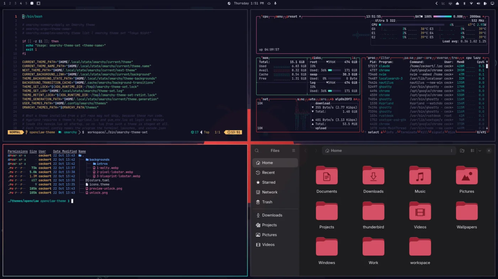
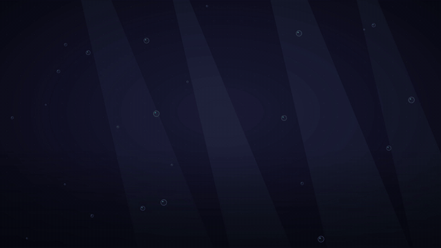
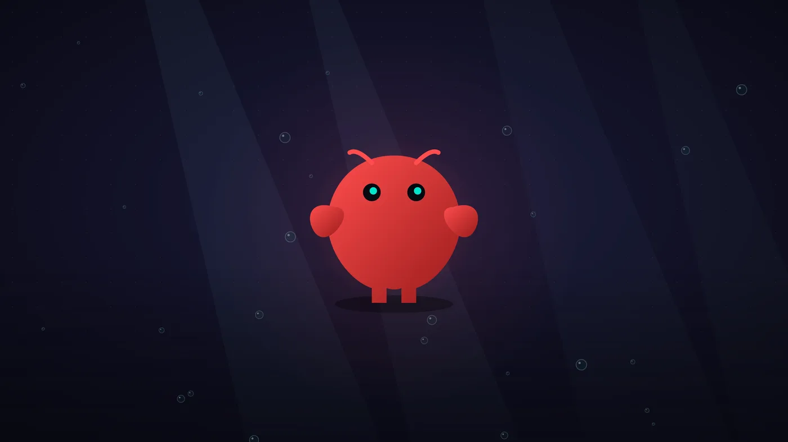
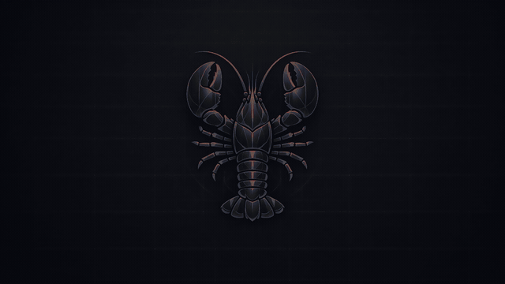
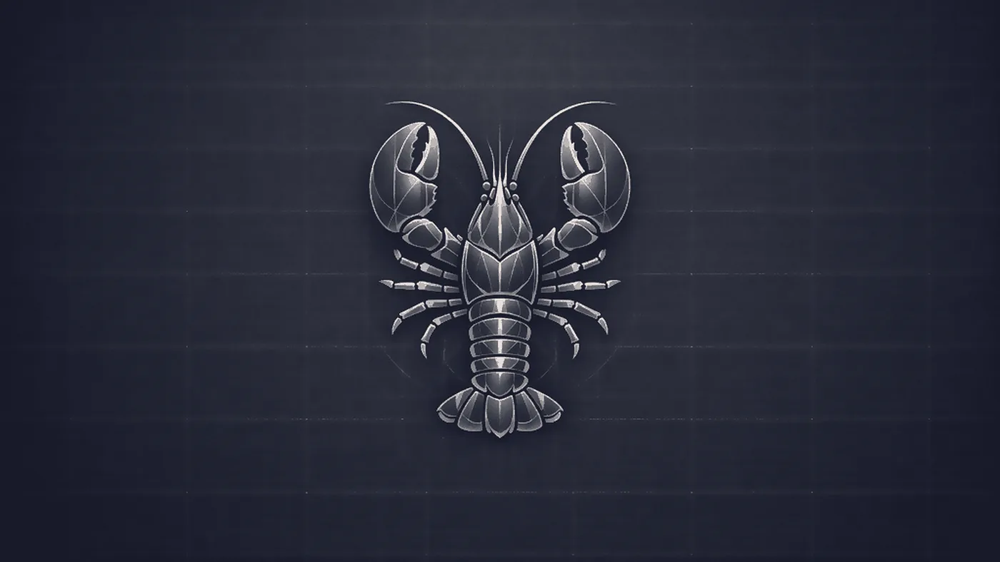
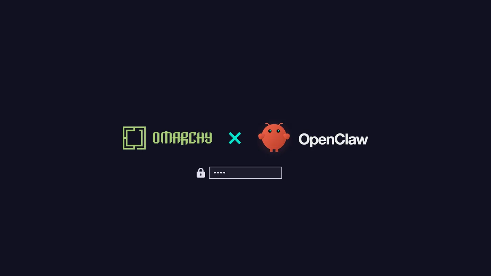

Omarchy×OpenClaw
As a thank-you to the Omarchy community, I've made an OpenClaw theme for Omarchy. It's navy with lobster coral and Molty teal, with a coral-to-teal window border and muted blue-green folder icons. It comes with two animated wallpapers, Molty rising from the deep and an etched blueprint lobster, plus an Omarchy × OpenClaw boot screen and screensaver. It's ready to try. I need two things from the OpenClaw Foundation.

Wallpapers
Each wallpaper plays a six-second intro when you switch to it and at login, then rests on its still. Pick them under Appearance > Background.
Molty
The default. Molty rises from the deep, lands with a squash, blinks, snaps both claws and sends up a teal heart.


Blueprint lobster
A coral scan line prints the etched lobster over a dim ghost of itself, and a sonar ping settles it.


Try it
On any current Omarchy, one command installs it and switches to it. You can also paste the URL into Install theme in the Omarchy menu.
omarchy theme install https://github.com/ceckert/omarchy-openclaw-themeWallpapers
Pick each one under Appearance > Background. Each intro should end exactly on its still, with no jump.
Screensaver
Saves yours first. Run it again with restore to put yours back.
bash ~/.config/omarchy/themes/openclaw/screensaver.sh install --previewBoot screen
Asks for your password; reboot to see it. omarchy plymouth reset undoes it.
omarchy plymouth set by theme openclawThe README has everything, including how to remove it. The scripts that rebuild the art are public on the art-source branch.

Feedback
Comment on the feedback issue. The most useful notes are about text that's hard to read, how the wallpapers crop on your screen, and how the boot screen and screensaver look.
Asks for the Foundation
Written OK to use Molty and the OpenClaw name and wordmark. All the art comes from the OpenClaw repo, which is MIT-licensed.
Accept a transfer of the repo to the
openclaworg. The licence is already in the Foundation's name, and GitHub redirects the old link after the move, so existing installs keep updating.